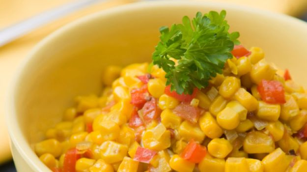

| Healthy Foods | Image | Description |
|---|---|---|
| Avocado and Tomato Guacamole with Carrots, Broccoli, Cauliflower, and Celery |
 |
Broccoli will reduce the risks of cancers like lung, throat, stomach, prostate, and breast cancer. Celery lowers blood pressure and cauliflower adds cancer-fighting glucosinolates. Add flavor to these crudites by dipping them in homemade avocado and tomato guacamole for an appetizing snack. Avocado is an excellent source of vitamin E along with many other vitamins and minerals. |
| Granola Bar with a Glass of Skim Milk |  |
Granola bars are a solution to the no-time-for-breakfast excuse. Some form of breakfast will help kids be more attentive and therefore do better in school and excel in sports, as well as prevent them from hitting the vending machines right after homeroom. Add a glass of skim milk for a fat-free calcium boost -- a quarter of the recommended daily allowance (RDA). The nuts, dried fruit, and seeds in granola bars make them high in fiber and omega-3 fats and an excellent source of energy. It's wise to avoid granola that is high in saturated fats. |
| Frozen Yogurt with Cashews and Walnuts |  |
Plain low-fat yogurt is an excellent source of calcium; an eight-ounce cup fulfills 45 percent of the RDA and has protein for the immune system. Low-fat or nonfat frozen yogurt might not have all the benefits of regular yogurt, but it tastes great and it's a much better alternative than ice cream. If your kids like nuts, sprinkle on some cashews and walnuts. Most nuts contain high amounts of iron, zinc, and magnesium and the fat is mostly unsaturated. It's good to eat fresh, plain nuts, not salted. |
| Mangoes and Grapes |  |
Slide a bowl of freshly sliced mangoes and some firm grapes in his/her direction. It'll keep her out of the kitchen for sodas and chips until dinnertime. You can't compliment a mango enough. This delicious tropical fruit provides 150 percent of the RDA for the cancer-fighting nutrient beta-carotene. It's loaded with fiber and potassium. Plus it'll fulfill a day's requirement of vitamin C. Grapes help reduce heart disease. |
| Hummus |  |
It is a common vegetarian spread with lots of iron and magnesium. Spread some on whole wheat pita bread (for fiber) and it'll make a satisfying snack or lunchtime food. |
| Peanut Butter |  |
peanut butter is packed with iron.
Sandwich peanut butter between some graham crackers and add slices of apples for a satisfying after-school snack. |
| Grilled Salmon Salad with Spinach |  |
Salmon is a good fish to get your teen hooked on because it contains heart-healthy omega-3 polyunsaturated fat. Along with its disease-fighting capabilities, omega-3 helps reduce the risk of depression and minimizes arthritis symptoms. Instead of tossing chicken into a salad, try it with salmon. When making salads, the general rule is the darker the green, whether it's lettuce or spinach, the better. One cup of romaine lettuce provides 20 percent of the RDA of beta-carotene. You would have to eat a whole head of iceberg lettuce to get the same amount |
| Whole Wheat Pasta with Fresh Tomato Sauce and Garlic Bread |
 |
Pasta is best topped with fresh tomato sauce. Tomatoes are a good source of beta-carotene, vitamins C, and E, and they're rich in lycopene, an antioxidant that helps prevent heart disease and cancer. Lycopene is actually more rich in a tomato sauce than it is in raw tomatoes. For added flavor, mix some garlic into the sauce or add some to toasted bread. Garlic lowers blood cholesterol and prevents clotting. |
Steamed Broccoli and Quinoa |  |
Broccoli -- more than anything -- is a disease fighter. It contains compounds like beta-carotene that fight cancer and reduce tumor growth, especially in the breast. One spear of broccoli will give you plenty of calcium, fiber, and potassium, and twice the RDA of vitamin C. Serve steamed broccoli with quinoa, a low-fat, high-fiber substitute for rice. Quinoa (pronounced KEEN-wah) looks and tastes like grain, but it's a seed that can be found in the grain section of your local supermarket. Quinoa is an excellent source of iron, potassium, vitamin B, and especially protein. In fact, the World Health Organization has stated that the quality of protein in quinoa matches that of milk. |